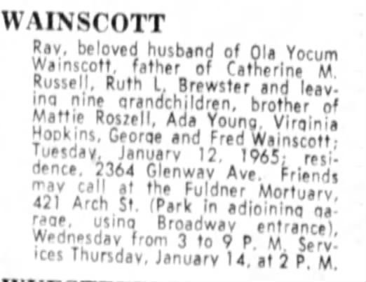

Wainscott line · Ruth Lee Brewster's father · Owen County, Kentucky, and Cincinnati, Ohio
Headstone, Baltimore Pike Cemetery (photo by Eric Leindecker, Find a Grave)
Quick Facts
Born
19 November 1906 SUPPORTED; Owen County, Kentucky DOCUMENTED The date is from his headstone; his age at marriage fits 1906. His daughters' death certificates give his birthplace as Owenton and Owen County, Kentucky. His death index gives 1907.
Also known as
Henry R. Wainscott (1965 death index); Ray Waincott (1927 marriage record)
Work
Molder in a brass foundry, Cincinnati, 1950 DOCUMENTED
Residence
Cincinnati: 1211 Harrison, 1938; 956 Martin Street, 1942; 2364 Glenway Avenue at his death DOCUMENTED
Died
12 January 1965, Cincinnati, Hamilton County, Ohio, aged 58; certificate 03458 DOCUMENTED
Buried
Baltimore Pike Cemetery, Cincinnati, Hamilton County, Ohio, Section 10, Grave 436 SUPPORTED; Find a Grave memorial 137165284. Funeral from Fuldner Mortuary, 14 January 1965 DOCUMENTED
Immediate Family
Parents
John Richard Wainscott (1862–1952) SUPPORTED Mother not proved UNPROVED Find a Grave links Nellie Tucker (born 1890) as his mother, but she was only twelve when his older brother George was born, so she may have been a stepmother.
Spouses
Elizabeth Mae (Lawrence) Wainscott, married 15 October 1927, Campbell County, Kentucky DOCUMENTED Ola Yocum Wainscott, his wife at his death in 1965 DOCUMENTED; marriage date not known
15 Oct 1927 · age 20 Married Elizabeth Lawrence, Campbell County, Kentucky DOCUMENTED
1930 Living in Cincinnati with Elizabeth and baby Catherine DOCUMENTED
3 Aug 1938 Daughter Margaret died, aged 3; family at 1211 Harrison DOCUMENTED
29 Nov 1942 Daughter Wanda died, aged 9; family at 956 Martin Street DOCUMENTED
1950 Molder in a brass foundry, Cincinnati, with Elizabeth and Ruth DOCUMENTED
5 Apr 1958 Wife Elizabeth died DOCUMENTED
1958–1965 Married Ola Yocum SUPPORTED
12 Jan 1965 · age 58 Died, Cincinnati; buried at Baltimore Pike Cemetery DOCUMENTED
Life Story
Ray Henry Wainscott was born on 19 November 1906 in Owen County, Kentucky, a son of John Richard Wainscott. SUPPORTED Like many Kentucky families of the time, the Wainscotts moved north to Cincinnati.
On 15 October 1927 he married Elizabeth Mae Lawrence across the river in Campbell County, Kentucky. DOCUMENTED They raised their family in Cincinnati, where Ray worked as a molder in a brass foundry. DOCUMENTED They had four daughters, Catherine, Wanda, Margaret and Ruth, and lost two of them young: Margaret in 1938, aged three, and Wanda in 1942, aged nine. DOCUMENTED
Elizabeth died in 1958. Ray later married Ola Yocum. He died in Cincinnati on 12 January 1965, aged 58, survived by Ola, his daughters Catherine Russell and Ruth Brewster, nine grandchildren, and his brothers and sisters. DOCUMENTED He is buried at Baltimore Pike Cemetery beside Elizabeth, under a stone that reads "Our Darling Father ... Gone But Not Forgotten." SUPPORTED
Photo Gallery
His headstone: "Our Darling Father · Ray Wainscott · Nov. 19, 1906 – Jan. 12, 1965 · Gone But Not Forgotten." Photo by Eric Leindecker, Find a Grave

His death notice, January 1965. Posted by SpringfieldFlyer, Find a Grave
Sources and Evidence
Ohio Death Index, Henry R. Wainscott, died 12 January 1965, Cincinnati, certificate 03458: FamilySearch (read 11 November 2026). DOCUMENTED
Death notice of Ray Wainscott, January 1965 (newspaper clipping, paper and date not shown), posted to his Find a Grave memorial by SpringfieldFlyer, 13 May 2024: image. DOCUMENTED Text: "Ray, beloved husband of Ola Yocum Wainscott, father of Catherine M. Russell, Ruth L. Brewster and leaving nine grandchildren, brother of Mattie Roszell, Ada Young, Virginia Hopkins, George and Fred Wainscott; Tuesday, January 12, 1965; residence, 2364 Glenway Ave."
Kentucky County Marriages, Ray Waincott and Elizabeth Lawrence, 15 October 1927, Campbell County: FamilySearch. DOCUMENTED
Ohio death certificates of his daughters Margaret (1938, FamilySearch) and Wanda (1942, FamilySearch), giving his birthplace. DOCUMENTED
Find a Grave, memorial 137165284: headstone, plot, family links. SUPPORTED
Grades: DOCUMENTED an original record says it · SUPPORTED several records point to it · FAMILY ACCOUNT the family's own telling · UNPROVED a lead, not proved.
Research Notes and Open Questions
His 1965 Ohio death certificate (no. 03458) would name both parents and settle whether Nellie Tucker was his mother.
His 1940 census entry has not been found; try spellings Wainscot, Winscott, Wanscott.
Check the World War II Draft Registration Cards, 1940–1947 collection for his 1940 draft card.
No marriage record found yet for Ray and Ola Yocum; try the Hamilton County Probate Court marriage index, 1958–1965.
DNA
No DNA matches linked yet.
Profile history: Created 11 November 2026 from death certificates, death and marriage indexes, census records, a 1965 death notice and Find a Grave.